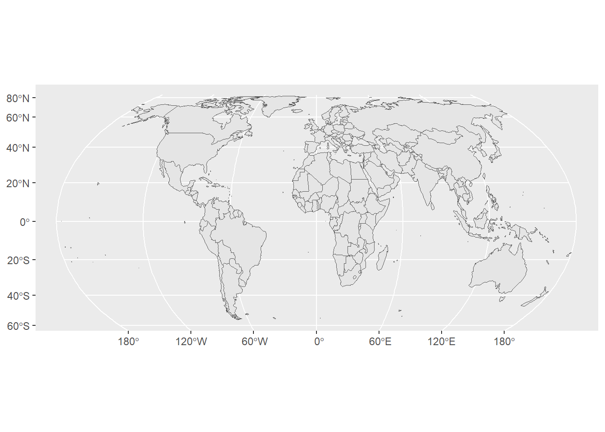
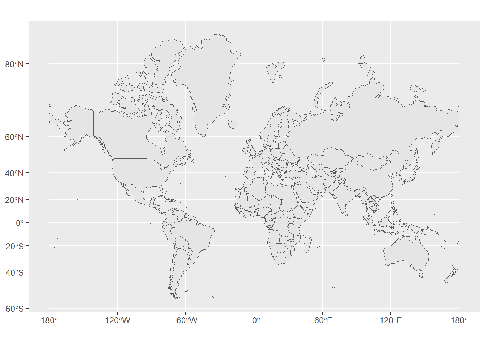
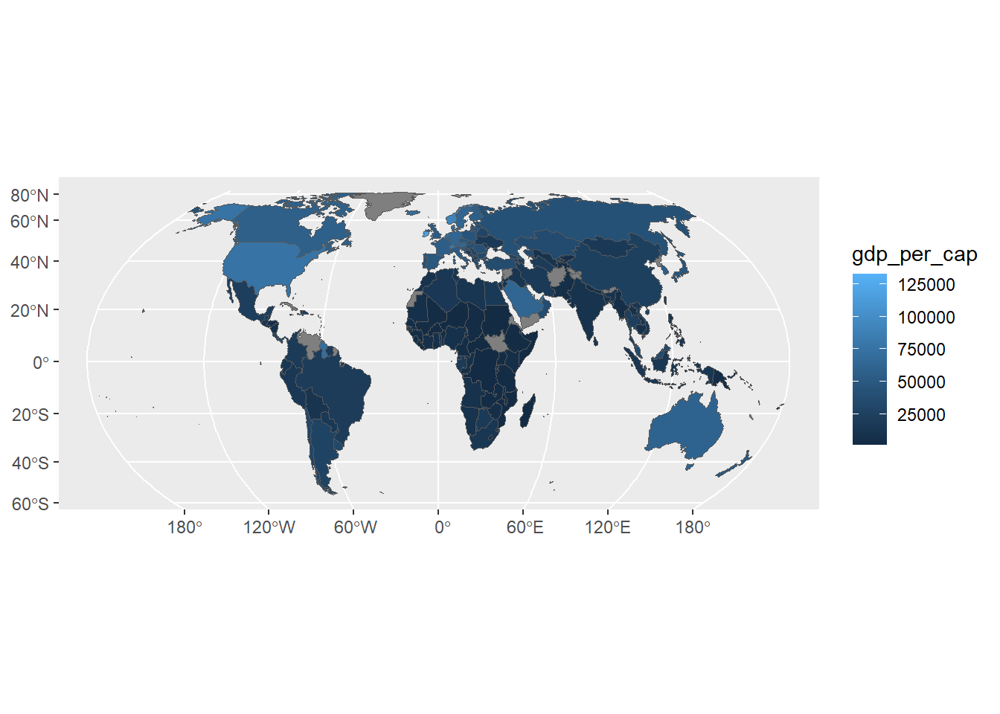
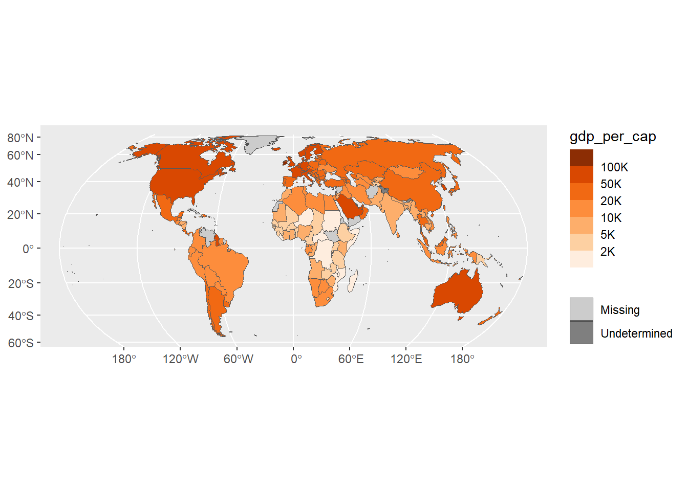
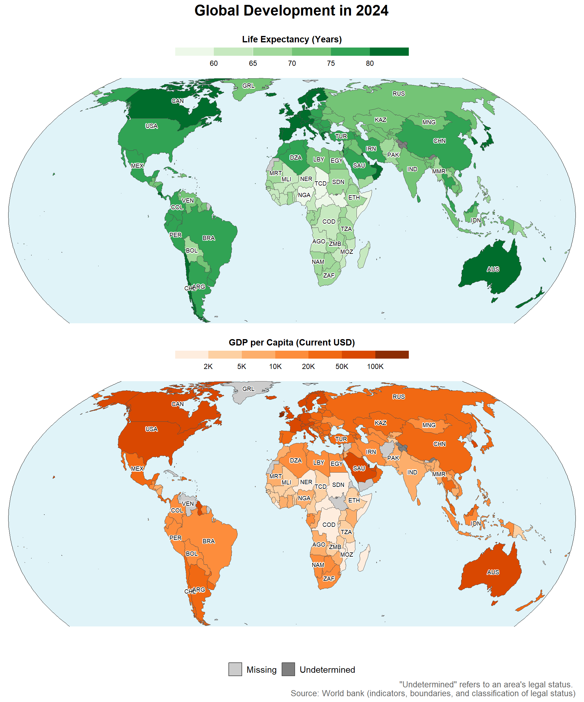

library(tidyverse)
library(mapview)
library(patchwork)
library(readxl)
library(rmapshaper)
library(scales)
library(sf)
library(shadowtext)Choropleth Lab
Week 10 Lab
3.1. Identify Suitable Fill Variables for Choropleth Maps
| Variable | Variable type | Suitable as fill color? Why or why not? | Would the result be a choropleth map? Why or why not? |
|---|---|---|---|
| GDP per capita | Quantitative, intensive | Yes. It is normalized per person, so countries can be compared by color. | Yes. A choropleth is appropriate because fill color shows an intensive country-level statistic. |
| Life expectancy | Quantitative, intensive | Yes. It is an average measure, so countries can be compared by color. | Yes. It is a choropleth because color represents an intensive country-level statistic. |
| Region | Categorical, nominal | Yes, but only with a qualitative palette because regions are categories. | No. It would be a categorical thematic map, not a choropleth, because the colors do not show statistical intensity. |
| Population | Quantitative, extensive | Not ideal. Total population depends on country size and can be misleading as polygon fill. | No, not strictly. Population density would be better for a choropleth because it normalizes population by area. |
3.2. Start Coding
3.3. Import Country Statistics
country_stats <-
"API_NY.GDP.PCAP.PP.KD_DS2_en_excel_v2_417139.xls" |>
read_xls(skip = 3) |>
select(name = "Country Name", code = "Country Code", gdp_per_cap = "2024") |>
left_join(
"API_SP.DYN.LE00.IN_DS2_en_excel_v2_404463.xls" |>
read_xls(skip = 3) |>
select(code = "Country Code", life_exp = "2024"),
join_by(code)
) |>
left_join(
"API_NY.GDP.PCAP.PP.KD_DS2_en_excel_v2_417139.xls" |>
read_xls(sheet = "Metadata - Countries") |>
select(code = "Country Code", region = "Region"),
join_by(code)
) |>
filter(!is.na(region)) |>
select(name, code, gdp_per_cap, life_exp)
country_stats# A tibble: 217 × 4
name code gdp_per_cap life_exp
<chr> <chr> <dbl> <dbl>
1 Aruba ABW 44559. 76.5
2 Afghanistan AFG NA 66.3
3 Angola AGO 8902. 64.8
4 Albania ALB 21641. 79.8
5 Andorra AND 65928. 84.2
6 United Arab Emirates ARE 69702. 83.1
7 Argentina ARG 26772. 77.5
8 Armenia ARM 20079. 78.3
9 American Samoa ASM NA 73.0
10 Antigua and Barbuda ATG 29372. 77.8
# ℹ 207 more rows3.3. Verifier Task
glimpse(country_stats)Rows: 217
Columns: 4
$ name <chr> "Aruba", "Afghanistan", "Angola", "Albania", "Andorra", "U…
$ code <chr> "ABW", "AFG", "AGO", "ALB", "AND", "ARE", "ARG", "ARM", "A…
$ gdp_per_cap <dbl> 44558.929, NA, 8901.887, 21641.073, 65928.307, 69701.805, …
$ life_exp <dbl> 76.50000, 66.28900, 64.80500, 79.77600, 84.18800, 83.06900…nrow(country_stats)[1] 217country_stats |>
summarize(
n_economies = n(),
n_missing_gdp = sum(is.na(gdp_per_cap)),
n_missing_life = sum(is.na(life_exp)),
n_missing_either = sum(is.na(gdp_per_cap) | is.na(life_exp)),
n_complete = sum(!is.na(gdp_per_cap) & !is.na(life_exp))
)# A tibble: 1 × 5
n_economies n_missing_gdp n_missing_life n_missing_either n_complete
<int> <int> <int> <int> <int>
1 217 29 0 29 1883.4. Import the Boundaries as sf Objects
country_boundaries <-
"WB_GAD_ADM0_complete.geojson" |>
read_sf() |>
select(code = ISO_A3, status = WB_STATUS)
country_boundariesSimple feature collection with 284 features and 2 fields
Geometry type: MULTIPOLYGON
Dimension: XY
Bounding box: xmin: -180 ymin: -59.42087 xmax: 180 ymax: 83.66508
Geodetic CRS: WGS 84
# A tibble: 284 × 3
code status geometry
<chr> <chr> <MULTIPOLYGON [°]>
1 CHN Member State (((117.5868 38.59517, 117.5891 38.58929, 117.5894 38.…
2 JPN Member State (((137.4841 34.67386, 137.4668 34.67145, 137.4606 34.…
3 KOR Member State (((126.0536 36.19852, 126.0537 36.20469, 126.0583 36.…
4 PRK Non Member State (((126.9551 38.16282, 126.9518 38.16213, 126.951 38.1…
5 RUS Member State (((130.619 48.88019, 130.6066 48.87763, 130.5912 48.8…
6 IND Member State (((97.0617 27.74969, 97.0555 27.74776, 97.05049 27.74…
7 KAZ Member State (((82.33713 45.20815, 82.33475 45.20851, 82.33324 45.…
8 KGZ Member State (((80.17441 42.21084, 80.16555 42.19608, 80.16556 42.…
9 MMR Member State (((97.54793 24.74106, 97.54926 24.73968, 97.54835 24.…
10 MNG Member State (((90.07994 47.86986, 90.07386 47.87005, 90.06721 47.…
# ℹ 274 more rows3.4. Verifier Task
class(country_boundaries)[1] "sf" "tbl_df" "tbl" "data.frame"unique(st_geometry_type(country_boundaries))[1] MULTIPOLYGON
18 Levels: GEOMETRY POINT LINESTRING POLYGON MULTIPOINT ... TRIANGLEst_crs(country_boundaries)$input[1] "WGS 84"st_is_longlat(country_boundaries)[1] TRUE3.5. Validate and Repair the Geometries
sum(!st_is_valid(country_boundaries))[1] 5country_boundaries <- st_make_valid(country_boundaries)
sum(!st_is_valid(country_boundaries))[1] 03.5. Verifier Task
# Before
n_rows_before <- nrow(country_boundaries)
geom_types_before <- unique(st_geometry_type(country_boundaries))
sum(!st_is_valid(country_boundaries))[1] 0country_boundaries <- st_make_valid(country_boundaries)
# After
sum(!st_is_valid(country_boundaries))[1] 0identical(n_rows_before, nrow(country_boundaries))[1] TRUEidentical(geom_types_before, unique(st_geometry_type(country_boundaries)))[1] TRUE3.6. Simplify the Polygons
# a. Number of boundary points before simplification
points_before <- npts(country_boundaries)
points_before[1] 3918720# b. Number of polygons for Singapore before simplification
sgp_polygons_before <- country_boundaries |>
filter(code == "SGP") |>
st_cast("POLYGON") |>
nrow()
sgp_polygons_before[1] 20# c. Simplify to approximately 10,000 boundary points
keep_target <- 10000 / points_before
country_boundaries <- country_boundaries |>
ms_simplify(
keep = keep_target,
keep_shapes = TRUE
)
# d. Number of polygons for Singapore after simplification
points_after <- npts(country_boundaries)
points_after[1] 15399sgp_polygons_after <- country_boundaries |>
filter(code == "SGP") |>
st_cast("POLYGON") |>
nrow()
sgp_polygons_after[1] 13.6. Verifier Task
nrow(country_boundaries)[1] 284sum(st_is_empty(country_boundaries))[1] 0sum(!st_is_valid(country_boundaries))[1] 03.7. Cure the Antimeridian Problem
# a.
ggplot(country_boundaries) + geom_sf()
# b.
country_boundaries <-
country_boundaries |>
st_wrap_dateline() |>
st_cast("MULTIPOLYGON")
ggplot(country_boundaries) + geom_sf()
3.7. Verifier Task
n_rows_before <- nrow(country_boundaries)
geom_types_before <- unique(st_geometry_type(country_boundaries))
country_boundaries <-
country_boundaries |>
st_wrap_dateline() |>
st_cast("MULTIPOLYGON")
identical(n_rows_before, nrow(country_boundaries))[1] TRUEidentical(geom_types_before, unique(st_geometry_type(country_boundaries)))[1] TRUEsum(!st_is_valid(country_boundaries))[1] 03.9. Join the statistics to the boundaries
countries <- country_boundaries |>
left_join(country_stats, by = "code")
countriesSimple feature collection with 264 features and 5 fields
Geometry type: MULTIPOLYGON
Dimension: XY
Bounding box: xmin: -180 ymin: -55.47733 xmax: 180 ymax: 83.65703
Geodetic CRS: WGS 84
# A tibble: 264 × 6
code status geometry name gdp_per_cap life_exp
<chr> <chr> <MULTIPOLYGON [°]> <chr> <dbl> <dbl>
1 ABW Does Not Contain … (((-70.05317 12.56385, -… Aruba 44559. 76.5
2 AFG Contains a Member… (((74.88918 37.23446, 74… Afgh… NA 66.3
3 AGO Contains a Member… (((13.43165 -5.860225, 1… Ango… 8902. 64.8
4 AIA Does Not Contain … (((-63.02705 18.25781, -… <NA> NA NA
5 ALA Does Not Contain … (((20.0263 60.09101, 20.… <NA> NA NA
6 ALB Contains a Member… (((20.98069 40.85395, 20… Alba… 21641. 79.8
7 AND Contains a Member… (((1.441969 42.60373, 1.… Ando… 65928. 84.2
8 ARE Contains a Member… (((55.20833 22.70833, 55… Unit… 69702. 83.1
9 ARG Contains a Member… (((-54.59378 -25.59278, … Arge… 26772. 77.5
10 ARM Contains a Member… (((43.47435 41.12305, 43… Arme… 20079. 78.3
# ℹ 254 more rows3.9. Verifier Task
# Check for any code in country_stats that didn't find a match in country_boundaries
unmatched <- country_stats |>
anti_join(country_boundaries, by = "code")
unmatched# A tibble: 1 × 4
name code gdp_per_cap life_exp
<chr> <chr> <dbl> <dbl>
1 Channel Islands CHI NA 81.2class(countries)[1] "sf" "tbl_df" "tbl" "data.frame"nrow(countries)[1] 264names(countries)[1] "code" "status" "geometry" "name" "gdp_per_cap"
[6] "life_exp" 3.10. Compare Map projections
The default CRS is EPSG:4326. It uses longitude and latitude coordinates. It is not really a projected CRS, but when drawn as a flat map it appears like an equirectangular.
Equal Earth projection (EPSG:8857)
ggplot(country_boundaries) +
geom_sf() +
coord_sf(crs = 8857)
- Web Mercator
ggplot(country_boundaries) +
geom_sf() +
coord_sf(crs = 3857)
- Comparison
Equal Earth (EPSG::8857): It is designed to preserve area, keeps all countries at their true relative sizes. This is useful for global choropleth map because countries are compared using color, so the map should not make some countries look much larger than they really are. There is a low shape distortion near the poles but the shapes stay recognizable. -The curved lines of longitude and straight lines of latitude show that the map is a projection of the round Earth onto a flat surface.
Web Mercator (EPSG:3857) The core problem is the area distortion, especially near the poles. So the places far from the equator are wildly inflated and the size is larger than they actually are. This can be misleading in a choropleth map because viewers may give more attention to contries that appear larger on the map. It preserves local shape quite well, which is useful for online maps and navigation. The graticule lines like rectangular grid, but this can hide how much the map is distorting the real size of countries, tricks viewers into misjudging relative sizes.
The best projection for a global choropleth map is the Equal Earth projection. Preserving relative area is the most important property for a choropleth when comparing countries using color.
3.11. Draft a First Choropleth Map
ggplot(countries) +
geom_sf(aes(fill = gdp_per_cap)) +
coord_sf(crs = "EPSG:8857")
Findings from Figure 3.11:
- Visibility of missing data: Yes, countries with missing GDP data are still visible filled with the default grey color.
- Undetermined-status areas: They are currently indistinguishable from data-missing countries. If an undetermined-status area lacks data, it is filled with the same default grey, making it impossible to tell apart from a regular country that simply has missing data.
- Color spread across GDP distribution: The default continuous color scale does not spread its colors well. Because GDP per capita is highly right-skewed (a few countries have very high GDP while most have lower GDP), the linear color gradient causes most countries to appear in a similar dark color at the low end of the scale, making it difficult to differentiate between them.
3.12. Refine the Map
gray_countries <- countries |>
filter(is.na(gdp_per_cap) | is.na(code)) |>
mutate(
map_category = if_else(is.na(code), "Undetermined", "Missing"),
fill_color = if_else(is.na(code), "grey50", "grey80")
)
ggplot() +
geom_sf(
data = filter(countries, !is.na(code), !is.na(gdp_per_cap)),
aes(fill = gdp_per_cap)
) +
geom_sf(
data = gray_countries,
aes(color = map_category),
fill = gray_countries$fill_color
) +
scale_fill_fermenter(
palette = "Oranges",
direction = 1,
breaks = c(2000, 5000, 10000, 20000, 50000, 100000),
labels = label_number(scale_cut = cut_short_scale())
) +
scale_color_manual(
name = NULL,
values = c("Missing" = "grey30", "Undetermined" = "grey30"),
guide = guide_legend(override.aes = list(fill = c("grey80", "grey50")))
) +
coord_sf(crs = "EPSG:8857")
3.13. Build the Two-Panel Choropleth Map
# 1. Create the ocean background and side borders
# Globe background (Light blue fill, no border)
lon_top <- seq(-180, 180, by = 1)
lat_top <- rep(84, length(lon_top))
lon_right <- rep(180, length(seq(83, -56, by = -1)))
lat_right <- seq(83, -56, by = -1)
lon_bottom <- seq(180, -180, by = -1)
lat_bottom <- rep(-56, length(lon_bottom))
lon_left <- rep(-180, length(seq(-55, 84, by = 1)))
lat_left <- seq(-55, 84, by = 1)
lon <- c(lon_top, lon_right, lon_bottom, lon_left)
lat <- c(lat_top, lat_right, lat_bottom, lat_left)
ocean_bg <- st_polygon(list(cbind(lon, lat))) |> st_sfc(crs = 4326)
# Left and right antimeridian edges (Thin black line)
left_edge <- st_linestring(cbind(rep(-180, 141), seq(-56, 84, by = 1))) |> st_sfc(crs = 4326)
right_edge <- st_linestring(cbind(rep(180, 141), seq(-56, 84, by = 1))) |> st_sfc(crs = 4326)
side_edges <- c(left_edge, right_edge)
# 2. Get top 40 largest countries for labels
largest_40 <- countries |>
filter(!is.na(code)) |>
mutate(area = st_area(geometry)) |>
arrange(desc(area)) |>
slice_head(n = 40) |>
st_centroid() |>
st_transform(8857)
largest_40_coords <- largest_40 |>
mutate(
x = st_coordinates(geometry)[, 1],
y = st_coordinates(geometry)[, 2]
) |>
st_drop_geometry()
# 3. Y-limits in projected space (EPSG:8857)
lims <- st_sfc(st_point(c(0, -56)), st_point(c(0, 84)), crs = 4326) |>
st_transform(8857) |>
st_coordinates()
y_limits <- lims[, "Y"]
create_map <- function(var_name, fill_palette, breaks, legend_title, label_func) {
main_data <- countries |>
filter(!is.na(code), !is.na(.data[[var_name]]))
gray_data <- countries |>
filter(is.na(code) | is.na(.data[[var_name]])) |>
mutate(
map_category = if_else(is.na(code), "Undetermined", "Missing"),
fill_color = if_else(is.na(code), "grey50", "grey80")
)
ggplot() +
# Add our new ocean background and side edges BEFORE drawing the countries
geom_sf(data = ocean_bg, fill = "#e0f3f8", color = NA) +
geom_sf(data = side_edges, color = "black", linewidth = 0.3) +
geom_sf(data = main_data, aes(fill = .data[[var_name]]), color = "grey30", linewidth = 0.15) +
geom_sf(data = gray_data, aes(color = map_category), fill = gray_data$fill_color, linewidth = 0.15) +
geom_shadowtext(
data = largest_40_coords,
aes(x = x, y = y, label = code),
size = 2.5,
color = "black",
bg.color = "white",
bg.r = 0.15
) +
scale_fill_fermenter(
palette = fill_palette,
direction = 1,
breaks = breaks,
labels = label_func,
guide = guide_colorsteps(
title = legend_title,
title.position = "top",
title.hjust = 0.5,
barwidth = 20,
barheight = 0.7
)
) +
scale_color_manual(
name = NULL,
values = c("Missing" = "grey30", "Undetermined" = "grey30"),
guide = "none"
) +
# Apply our calculated y-limits here
coord_sf(crs = "EPSG:8857", ylim = y_limits, expand = FALSE) +
theme_void() +
theme(
legend.position = "top",
legend.title = element_text(face = "bold", size = 11),
legend.text = element_text(size = 9),
plot.margin = margin(5, 5, 5, 5)
)
}
p_life <- create_map(
"life_exp",
"Greens",
c(60, 65, 70, 75, 80),
"Life Expectancy (Years)",
label_number()
)
p_gdp <- create_map(
"gdp_per_cap",
"Oranges",
c(2000, 5000, 10000, 20000, 50000, 100000),
"GDP per Capita (Current USD)",
label_number(scale_cut = cut_short_scale())
)
dummy_gray <- data.frame(
map_category = c("Missing", "Undetermined"),
fill_color = c("grey80", "grey50")
)
p_legend <- ggplot(dummy_gray) +
geom_rect(aes(xmin = 0, xmax = 0, ymin = 0, ymax = 0, color = map_category), fill = dummy_gray$fill_color) +
scale_color_manual(
name = NULL,
values = c("Missing" = "grey30", "Undetermined" = "grey30"),
guide = guide_legend(override.aes = list(fill = c("grey80", "grey50")), nrow = 1)
) +
theme_void() +
theme(
legend.position = "bottom",
legend.text = element_text(size = 11),
plot.margin = margin(t = 10, b = 0)
)
final_plot <- p_life / p_gdp / p_legend +
plot_layout(heights = c(1, 1, 0.05)) +
plot_annotation(
title = "Global Development in 2024",
caption = "\"Undetermined\" refers to an area's legal status. \n Source: World bank (indicators, boundaries, and classification of legal status)",
theme = theme(
plot.title = element_text(hjust = 0.5, face = "bold", size = 18, margin = margin(b = 15)),
plot.caption = element_text(hjust = 1, size = 10, color = "grey40")
)
)
final_plot
3.13. Verifier Task: Audit Checklist
- Layout: The figure uses
patchwork(p_life / p_gdp) to correctly stack life expectancy on top and GDP per capita on the bottom. - Map projection: Both maps use the Equal Earth equal-area projection (
coord_sf(crs = "EPSG:8857")). - Clipping: The maps are correctly clipped vertically using manually calculated projected limits for 56°S and 84°N (
ylim = y_limits). - Color palettes:
scale_fill_fermenteris used with ColorBrewer palettes (Greensfor Life Expectancy,Orangesfor GDP). - Gray fills: Missing data is filled with
grey80and undetermined areas withgrey50. - Country borders: Thin borders (
linewidth = 0.15) are drawn for all countries to keep neighbors visually distinct. - Legend scales: Appropriate breaks are specified for both variables and numbers are formatted compactly using
label_number(scale_cut = cut_short_scale()). - Legend placement: Fill legends are positioned horizontally, centered above their respective maps which acts as a map title. A dedicated dummy plot (
p_legend) was used to display the two gray keys at the bottom of the figure. - Country labels: The 40 largest countries by
st_area()are labelled at their centroids usinggeom_shadowtext(). - Caption: The World Bank credit and the required definition for “undetermined” regions are present in the bottom right caption.
- Background and frame: A custom
ocean_bgglobe polygon fills the map extent with light blue#e0f3f8, whileside_edgesaccurately draws the thin black antimeridian curves on the left and right.
3.14. Conclusions and Comparison
Conclusions drawn from the maps: By comparing the two maps, a reader can immediately observe a strong correlation between wealth and health. The North Side of the world: (North America, Western Europe, Australia/New Zealand) and parts of East Asia have both the highest GDP per capita and the highest life expectancies. On the other hand, there is a distinct group of poverty and lower life expectancy concentrated primarily in Sub-Saharan Africa. The maps clearly demonstrate that GDP and Life Expectancy are heavily regionalized.
Advantages of the Choropleth Maps:
- The Choropleth Map instantly reveals spatial patterns, regional clustering, and neighbor effects that a scatter plot may not be able to show.
- Every country with data is represented in its true geographical location. However, in the Preston-curve plot, many points representing smaller nations overlap over one another, making them hard to identify.
- Non-technical readers can immediately observe the global divide without needing to interpret graphs or trend lines.
Disadvantages of the Choropleth Maps (vs. the Preston-curve plot):
- Choropleth Maps inherently emphasize physical landmass over human population. Large countries like Russia, Canada, or Australia dominate the map due to their land size, while densely populated but geographically small countries are much harder to see. The Preston-curve plot solves this by sizing points by population.
- While the maps are great at quickly establishing some sort of relationship, the exact mathematical nature of the correlation is lost. The Preston-curve plot explicitly shows the relationship (GDP on life expectancy), which is not possible to deduce by simply glancing between two separate maps.
4.1. Reflect on AI Use
ChatGPT was used as an assistive AI tool.
One useful AI suggestion came in Section 3.6. Our draft simplification code was based on Tut10’s ms_simplify() call, but it did not guard against small islands being dropped entirely once their polygons shrank below the simplification threshold. The AI pointed out the keep_shapes = TRUE argument, which keeps at least one polygon per feature. Without it, Singapore’s row could have vanished from country_boundaries instead of just losing its smaller islets.
One AI response that was wrong came in Section 3.13, when building the ocean background polygon for the final map. The AI’s first version only placed dense coordinate points along the top and bottom edges of the polygon, then connected the corners with straight lines. When rendered in the Equal Earth projection, this caused the ocean background to cut off on the left and right sides instead of bulging out to match the curved antimeridian. We caught this by visually inspecting the rendered map and noticing the background did not cover the full globe. We reported the specific visual symptom back to the AI, which diagnosed the cause (straight lines cannot follow a curved projected edge) and corrected it by adding dense points along all four edges of the polygon.
4.2. Member’s Role and Contributions
- Joshua Dui: Coder
- Benjamin: Navigator
- Mei Yuen: Verifier
- Dannon: Constructive Critic and Reporter
- Danish: AI Liaison